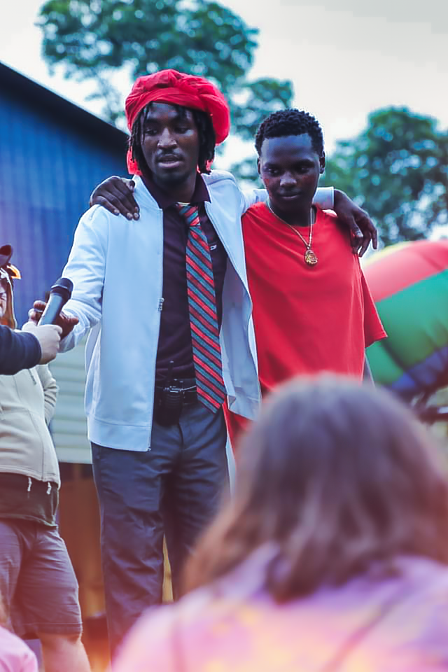
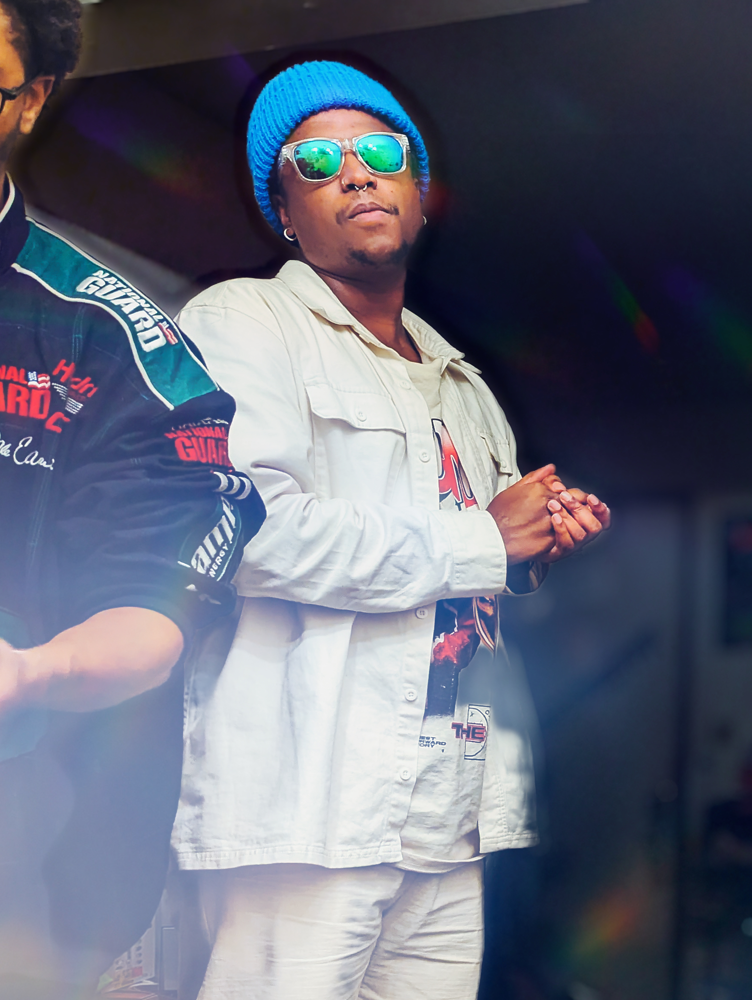
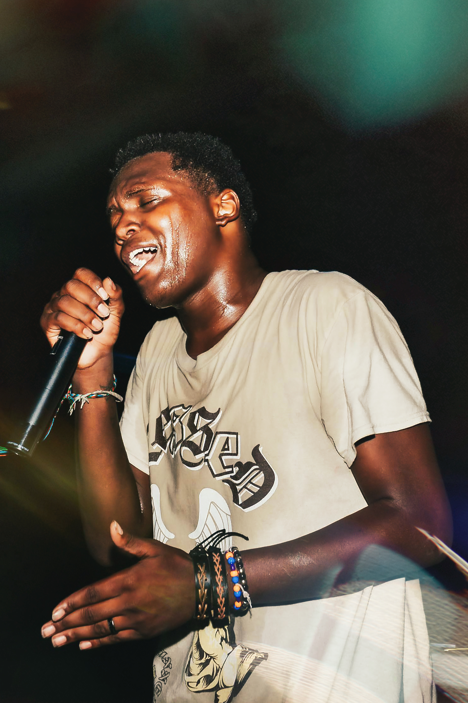

Internal landing page
Visitors arrive here first, get the story, and see the people behind the work.
A Camp Inno landing page for the SYTYCC crew, with a direct path into the live resource hub. This page gives visitors the context, faces, and brand story first, then routes them straight into the tools and resources.
That keeps Camp Inno and SYTYCC visually aligned while still sending people straight to the public resource hub when they are ready for templates, links, and live materials.
Visitors arrive here first, get the story, and see the people behind the work.
Camp Inno logos stay consistent across the site while SYTYCC keeps its black-and-white identity inside the page content.
The primary call to action routes straight to the live SYTYCC hub at soyouthinkyoucancamp.com.
This gives you the “embed if possible” option from the brief while still keeping a strong direct-link path if the external site blocks previews.
If the preview does not load, use the button above to open the live hub directly in a new tab.
This is the Camp Inno-hosted SYTYCC page the messages were describing: a page with the crew front and center, plus a clear route into the resource hub.
Nelson is a camp leader, youth developer, and overall genius (this is Chandan, btw) from Woodbury, NJ. Nelson has been involved in summer camp and youth development for 15+ years as a camper, counselor, unit leader, camp director, and camp founder.
Nelson is currently spearheading the development of a brand new camp, Inno, inspiring the next generation of radical innovators. It is said that Nelson may be the chosen one who will bring long awaited unity to the camp world.

Chandan is a man of many skills, all of which he developed over centuries of hard work. He once bested a mythic creature with just his gaze and a straw because that's all he had available as he sat in a Mcdonald's drive-thru when the beast approached him.
He hails from the mountains of Flint, Michigan where he first set out on his journey to find the legendary "perfect camp". After many moons he finally determined that the perfect camp is one that must be created, and so he tagged along with Nelson to bring forth this prophesied camp experience.

Quarius is a videographer, creative director, and media connoisseur with a fine taste for creative direction. He enjoys filmmaking, old school film and television, and playing fighting games in his free-time.
His creative talent is only second to his sense of humor...
Which is only third to his irony...
Which is fourth to the impeding sense of doom that he carries with him at all times...
Which is only fifth to...

If you know, you know.
Fortunately, we know. Patrick is the energy, the talent, the creativity, the positive mindset, that every camp should have! There is no better person to hype up a crowd or get the people going. His presence is truly something you have to experience in person.
Fortunately (again), Patrick has decided to team up with us to help teach the world his ways, and also provide valuable insights into how social media and camp come together.
